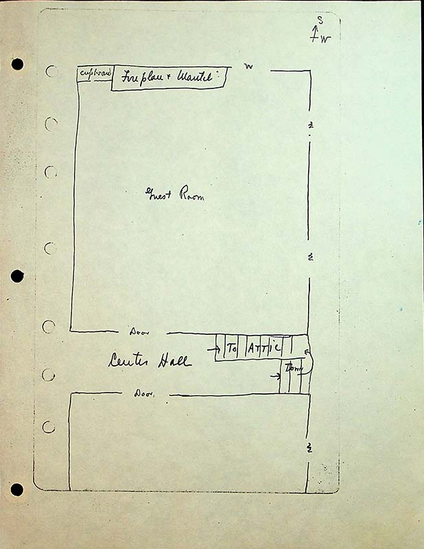

partial compass rose with south to top of page and west to right of page
cupboard, fireplacetop left
Guest Roomcenter of top room
to Attic, downat button of room, staircase drawn with arrows indicating up